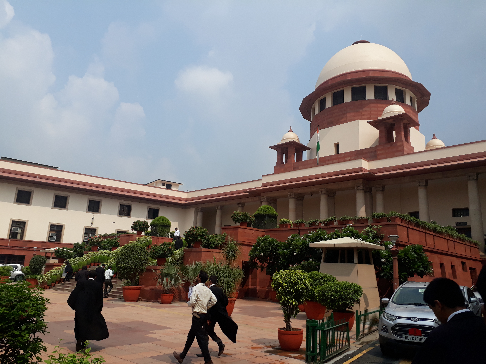
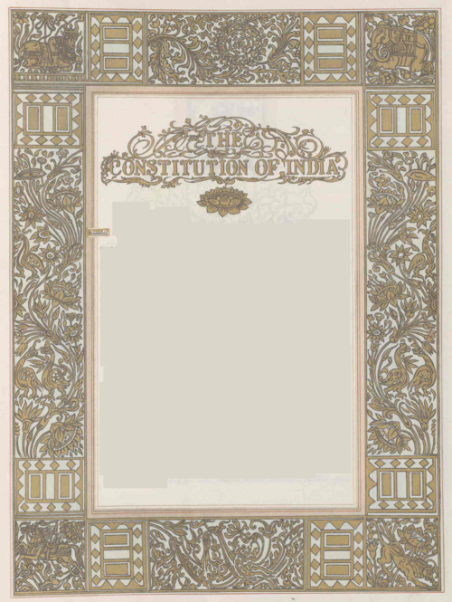

| Right | Articles | Key features/traps |
|---|---|---|
| Equality | 14, 15, 16, 17, 18 | Art 14: equality before law + equal protection; Art 17: abolishes untouchability (absolute — no exceptions); Art 18: abolishes titles (awards like Bharat Ratna are NOT titles) |
| Freedom | 19, 20, 21, 21A, 22 | Art 19: six freedoms; Art 21: life & personal liberty (Maneka Gandhi 1978 broadened); Art 21A: education 6–14 yrs (86th Amendment 2002); Art 22: arrest safeguards |
| Against Exploitation | 23, 24 | Art 23: bans human trafficking & forced labour (State may impose compulsory service — e.g., military/social); Art 24: no child below 14 in hazardous employment |
| Freedom of Religion | 25, 26, 27, 28 | Art 25: conscience + profess/practice/propagate; Art 27: no compulsory religious taxes; Art 28: no religious instruction in wholly State-funded institutions |
| Cultural & Educational | 29, 30 | Art 29: any section's language/culture; Art 30: minorities to establish educational institutions (not confined to citizens) |
| Constitutional Remedies | 32 | Dr. Ambedkar: "heart and soul of the Constitution"; 5 writs; SC original but not exclusive jurisdiction; FRs are defended but not defined |
| Clause | Freedom | Reasonable restrictions (grounds) |
|---|---|---|
| 19(1)(a) | Speech & expression | Sovereignty & integrity, security of State, friendly relations, public order, decency/morality, contempt, defamation, incitement |
| 19(1)(b) | Assembly (peaceable, unarmed) | Sovereignty & integrity, public order |
| 19(1)(c) | Association | Sovereignty & integrity, public order, morality |
| 19(1)(d) | Movement throughout India | General public interest, Scheduled Areas protection |
| 19(1)(e) | Residence | General public interest, Scheduled Areas protection |
| 19(1)(g) | Profession/occupation/trade/business | General public, professional/technical qualifications, State monopoly |

| Writ | Literal meaning | Purpose | Typical use |
|---|---|---|---|
| Habeas Corpus | "You may have the body" | Produce detained person; tests legality of detention | Illegal detention, preventive detention review |
| Mandamus | "We command" | Command public official/body to perform mandatory duty | Official refuses to act |
| Prohibition | "To forbid" | Stop lower court from exceeding jurisdiction (pre-judgment) | Lower court acting without jurisdiction |
| Certiorari | "To be certified" | Quash order of lower court/tribunal (post-judgment); also against judicial & administrative authorities | Quashing illegal orders |
| Quo Warranto | "By what authority" | Question legality of a person's claim to a public office | Unqualified office-holder |
| Right | Citizens only? | Notes |
|---|---|---|
| Arts 15, 16, 19, 29, 30 | 15, 16, 19: citizens only; 29, 30: any section/citizens | Art 19 exclusively citizens; Art 15(3) special provisions for women & children |
| Arts 14, 20, 21, 21A, 22, 23, 24, 25–28 | Available to all persons (incl. foreigners, companies) | Equality before law and life/personal liberty extend to everyone on Indian soil |
| Art 30 (minority institutions) | Citizens (minorities — religious/linguistic) | Not confined to citizens; State can regulate standards |
| Fact | Answer | Trap |
|---|---|---|
| Property as FR | Art 31 deleted by 44th Amendment (1978); now Art 300A legal right | "31-B" is different — Ninth Schedule validation |
| Education as FR | Art 21A added by 86th Amendment (2002), 6–14 yrs, RTE Act 2009 | Not Art 45 (that's DPSP childhood care) |
| Who can suspend FRs | President under Art 359 during Emergency (except 20–21 post-44th) | Suspension ≠ automatic; needs Presidential order |
| Martial law vs FRs | Art 34 — Parliament may indemnify; martial law affects FRs | Not in Constitution's FR-suspension article set |
| FRs & armed forces | Art 33 — Parliament may restrict FRs of forces for discipline | Only Parliament, not State legislatures |
| Abolition of titles (Art 18) | Academic/military distinctions exempt; Bharat Ratna etc. are awards, not "titles" | "Balaji Raghavan (1996)" upheld awards |
| Article 14 sources | UK: "equality before law"; US: "equal protection of laws" | Both fused in one Article |
| Newest FR-related amendments | 86th (21A), 44th (31 deleted; 19 restored), 42nd (restrictions) | 103rd (EWS 10%) — Art 15(6), 16(6) |
